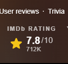

O filme do Batman de 2022, dirigido por Matt Reeves, conquistou a atenção dos fãs e da crítica. Com uma nota de 7.8/10 no IMDb, entrega uma experiência única e envolvente para os espectadores.
Matt Reeves é um renomado diretor de cinema conhecido por seu talento em contar histórias cativantes e emocionantes. Antes de assumir a direção do filme do Batman, ele já havia conquistado destaque com outros trabalhos notáveis.

Um dos filmes famosos de Matt Reeves é "Cloverfield" (2008), um suspense de ficção científica que se tornou um sucesso de bilheteria. Sua habilidade em criar uma atmosfera tensa e envolvente ficou evidente nesse filme.
Outro trabalho aclamado de Reeves é o filme "Planeta dos Macacos: A Origem" (2011). Essa produção revitalizou a franquia dos macacos inteligentes e foi elogiada por sua narrativa inteligente, efeitos visuais impressionantes e atuações cativantes.
Com base no histórico de Matt Reeves e na nota positiva do IMDb para o filme do Batman de 2022, é possível esperar um trabalho de qualidade e uma abordagem única para o icônico personagem. Os fãs do Batman e do cinema em geral estão ansiosos para conferir essa nova visão do Cavaleiro das Trevas sob a direção de Matt Reeves.

O filme do Batman de 2022 foi incrível! A ação foi intensa e o enredo envolvente. Mal posso esperar pela sequência!
Amei o novo filme do Batman! O elenco foi perfeito, e a atmosfera sombria combinou perfeitamente com o personagem.
O filme do Batman de 2022 superou todas as minhas expectativas! A direção foi impecável, e o roteiro trouxe uma abordagem única ao personagem
.Que filme sensacional! A atuação do ator principal como Batman foi brilhante. Mal posso esperar para ver mais aventuras do Cavaleiro das Trevas!